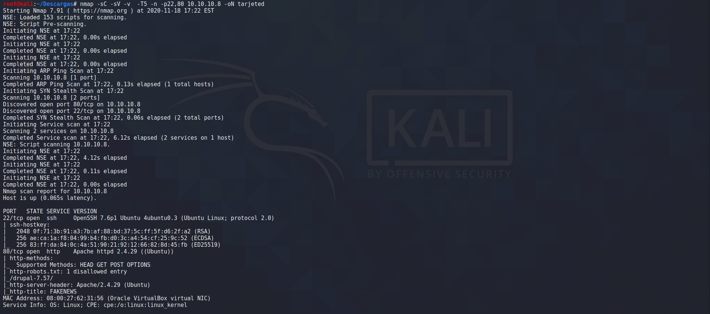

Pepe the Frog
Enumeracion de servicios y puertos
Comenzaremos colocando la ip en el navegador .

Nos aparece el logo mu chulo de la pagina fake news, en el codigo fuente no se aprecia nada de interes. Pasamos a enumerar los puertos con nmap.
Como vemos en la imagen hemos utilizado -sC con nmap para que utilice todos los script que tiene y -sV para saber la version
Nos muestra que robot.txt hay una carpeta disallowed "oculta" /drupal-7.57/
Bueno pues ya estamos dentro de la maquina victima y vemos que estamos en la carpeta pepethefrog listamos para ver que hay en la carpeta y nos aparece la primera Flag user.txt, listamos otra vez con ls -a para ver archivos y carpetas ocultos y vemos otro archivo que no me cuadra .bash_none le hacemos un cat y zas en toda la boca, la siguiente Flag root.txt.

Herramientas utilizadas para este reto:
Foro CHE y grupo de telegram
Podeis pedir ayuda de cualquier reto a la comunidad. Grupo de Telegram